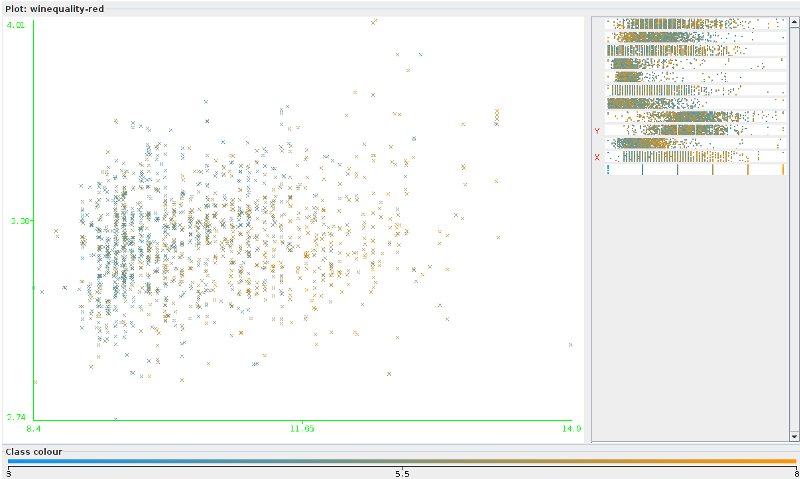

This is the step by step data mining process as applied to a real world data set.
This dataset contains about 5,000 wines. Each wine has 11 physical attributes measured about it, and a human quality measurement.
The first step in mining a dataset is to get familiar with the data. To that end here are various statistics about the data:
| Attribute | Type | Range | Mean/Mode |
| fixed acidity | numeric | 4.6-15.9 | 8.32 |
| volatile acidity | numeric | 0.12-1.58 | 0.528 |
| critic acid | numeric | 0-1 | 0.271 |
| residual sugar | numeric | 0.9-15.5 | 2.539 |
| chlorides | numeric | 0.012-0.611 | 0.087 |
| free sulfur dioxide | numeric | 1-72 | 15.875 |
| total sulfur dioxide | numeric | 6-289 | 46.468 |
| density | numeric | 0.99-1.004 | 0.997 |
| pH | numeric | 2.74-4.01 | 3.311 |
| sulphates | numeric | 0.33-2.00 | 0.658 |
| alcohol % | numeric | 8.4-14.9 | 10.423 |
| Quality (class) | numeric | 3-8 (nominally 0-10) | 5.636 |
Here are some sample data instances
| fixed acidity | volatile acidity | citric acid | residual sugar | chlorides | free sulfur dioxide | total sulfur dioxide | density | pH | sulphates | alcohol | quality |
| 6.8 | 0.67 | 0.15 | 1.8 | 0.118 | 13 | 20 | 0.9954 | 3.42 | 0.67 | 11.3 | 6 |
| 6.2 | 0.56 | 0.09 | 1.7 | 0.053 | 24 | 32 | 0.99402 | 3.54 | 0.6 | 11.3 | 5 |
| 7.4 | 0.35 | 0.33 | 2.4 | 0.068 | 9 | 26 | 0.9947 | 3.36 | 0.6 | 11.9 | 6 |
| 6.2 | 0.56 | 0.09 | 1.7 | 0.053 | 24 | 32 | 0.99402 | 3.54 | 0.6 | 11.3 | 5 |
| 6.1 | 0.715 | 0.1 | 2.6 | 0.053 | 13 | 27 | 0.99362 | 3.57 | 0.5 | 11.9 | 5 |
| 6.2 | 0.46 | 0.29 | 2.1 | 0.074 | 32 | 98 | 0.99578 | 3.33 | 0.62 | 9.8 | 5 |
| 6.7 | 0.32 | 0.44 | 2.4 | 0.061 | 24 | 34 | 0.99484 | 3.29 | 0.8 | 11.6 | 7 |
Here is an interesting relationship that is obvious with just 2 attributes - alcohol content vs pH. Quality is shown as the color of the points, with more yellow being higher quality. You will notice that high alchol contents correlate very well with higher quality. pH on the other hand, seems to have a "best pH" near the middle of the range.
